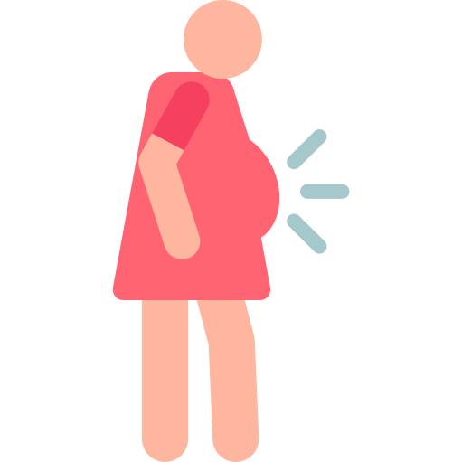

{% extends "base.html" %}
{% load i18n static %}


{% block contenido %}

<div class="container">
<div class=" row mr-5 ml-5 mt-5 pr-lg-5 pl-lg-5  d-flex align-items-center  justify-content-center ">
    <div class="col-12">
        <h1 align="center"  class="nav justify-content-center tituloView">Contador de contracciones</h1>
        <hr style="width: 60%">
    </div>
</div>


<hr>


  <form name="cron" id="formulario" method="post" action="#"> <!--botones-->
{% csrf_token %}
        <div id = "formulario_oculto" class="formulario_oculto">
            <input id="form_fecha" name="form_fecha" type="hidden">
            <input id="form_duracion" name="form_duracion" type="hidden">
            <input id="form_intervalo" name="form_intervalo" type="hidden">
        </div>

        <div class="row p-2 align-items-center justify-content-center">
            <div class="col-sm-6 mt-2 p-md-3">
                <button  class="btn btn-outline-info" style="background: #ebebeb; color: black; width: 100%; height: 100%" type="button" value="Contracción" name="empieza" >
                    Contracción
                    
                </button>
            </div>

            <div class="col-12 col-sm-6 mt-2 p-md-3">
                <button class="btn btn-outline-info" style="background: #ebebeb; color: black;width: 100%; height: 100%" type="button" value="Fin contracción" name="para" >
                    Fin contracción
                    
                </button>
            </div>
        </div>

        <div class="row p-3 align-items-center justify-content-center ">
            <div class="col-sm-4 col-12 alert alert-info  mr-1 m-sm-2 " id="cronometro">
                <div id="reloj">
                    00 : 00
                </div> <!--cornómetro-->

             </div>
            <div class="col-sm-2"></div>

            <div class="col-sm-4 col-12 alert alert-info ml-1 m-sm-2" id="cronometro1">
                <div id="relojIntervalo">
                    00 : 00
                </div> <!--cornómetro-->
            </div>
        </div>


        <div class="row p-3 align-items-center justify-content-center">
            <div class="col-12" id="duracionContraccion">

            </div> <!--cornómetro-->

            <div class="col-12" id="intervalo">

            </div> <!--cornómetro-->

        </div>


        <div class="row p-3 align-items-center justify-content-center">
            <div class="col-4 col-md-3 mt-2">
                <button class="btn btn-outline-info" style="background: #ebebeb; color: black; width: 100%; height: 100%" type="submit" value="Reiniciar" name="reiniciar" >
                REINICIAR
                </button>
            </div>
        </div>


  </form>
</div>


<script type="text/javascript">

window.onload = function() {
    //localiza en pantalla el reloj y se ronombra visorReloj para trabajar con ello
    visorReloj=document.getElementById("reloj");
    intervaloReloj=document.getElementById("relojIntervalo");

    document.cron.empieza.onclick = empezar;
    document.cron.para.onclick = parar;
    document.cron.reiniciar.onclick = reiniciar;
}

    var enMarchaContraccion=0; //control del temporizador--> 0= parado; 1= activo
    var croContraccion=0; //estado inicial del cronómetro.

    var enMarchaIntervalo=0; //control del temporizador--> 0= parado; 1= activo
    var croIntervalo=0; //estado inicial del cronómetro.
    var input_fecha = "";
    var input_duracion = "";
    var input_intervalo = "";

    var valor = 1;

    function empezar() {
        $("#id_despripcion").val('30');
        if (enMarchaContraccion==0) { //Si el cronometro esta parado
            emp=new Date() //fecha actual
            elcrono=setInterval(tiempo,10); //función del temporizador.
            enMarchaContraccion=1 //indicamos que se ha puesto en enMarchaContraccion.

        }
        if(enMarchaIntervalo==1){
            clearInterval(elcronotiempo1); //parar el crono
            var idContraccion = "#Contraccion" + valor;


            if(mn1 == "00"){
             $(idContraccion).append('<div id="Intervalo'+ valor + '">'+"INTERVALO " + sg1+' segundos'+'</div>');
            }else{
                $(idContraccion).append('<div id="Intervalo'+ valor + '">'+"INTERVALO "+mn1 +' minuto/s y '+ sg1+' segundos'+'</div>');
            }
             enMarchaIntervalo=0;
            valor = valor +1;

            input_intervalo = input_intervalo +mn1.toString() + "."+sg1.toString() +";";
        }

    }

        function parar() {
        if (enMarchaContraccion==1) { //sólo si está en funcionamiento
            clearInterval(elcrono); //parar el crono
            var idContraccion = "#Contraccion" + valor;
            var month = emp.getMonth() + 1;
            var minutes = emp.getMinutes();
            var day = emp.getDate();

            if(minutes <=9){
                minutos = "0" + minutes.toString();
            }else{
                minutos = minutes;
            }

            if(day <=9){
                dia = "0" + day.toString();
            }else{
                dia = day;
            }

            if(month <=9){
                mes = "0" + month.toString();
            }else{
                mes = month
            }
            var string_fecha = dia+"/"+ mes + "/"+ emp.getFullYear() + " " + emp.getHours() + ":" + minutos ;
            var string_fecha_input = emp.getFullYear()+"-"+ mes + "-"+ dia + " " + emp.getHours() + ":" + minutos;


            $('#duracionContraccion').append('<div class="alert alert-secondary" id="Contraccion'+ valor + '"></div>')

            $(idContraccion).append('<div id="Fecha'+ valor + '">'+"FECHA "+ string_fecha +'</div>')

            if(mn == "00"){
             $(idContraccion).append('<div id="Duracion'+ valor + '">'
                                                        +"DURACIÓN "+ sg+' segundos'+

                                            '</div>');
            }else{
                $(idContraccion).append('<div id="Duracion'+ valor + '">'+"DURACIÓN "+mn +' minuto/s y '+ sg+' segundos'+'</div>');
            }
            input_fecha = input_fecha +string_fecha_input+ ";";
            input_duracion = input_duracion +mn.toString() + "."+sg.toString() +";";

            enMarchaContraccion=0; //indicar que está parado.


        }
        if (enMarchaIntervalo==0) { //Si el cronometro esta parado
            emp1=new Date() //fecha actual
            elcronotiempo1=setInterval(tiempo1,10); //función del temporizador..
            enMarchaIntervalo=1 //indicamos que se ha puesto en enMarchaContraccion.
        }

    }

    function tiempo() { //función del temporizador
        actual=new Date() //fecha en el instante
        croContraccion=actual-emp //tiempo transcurrido en milisegundos
        cr=new Date() //fecha donde guardamos el tiempo transcurrido
        cr.setTime(croContraccion) //nos da la fecha en milisegundos
        cs=cr.getMilliseconds() //milisegundos del cronómetro
        sg=cr.getSeconds(); //segundos del cronómetro
        mn=cr.getMinutes(); //minutos del cronómetro
        cs=cs/10; //paso a centésimas de segundo.
        cs=Math.round(cs) //despreciamos los decimales
        ho=cr.getHours()-1; //horas del cronómetro
             if (cs<10) {cs="0"+cs;}  //se ponen siempre 2 cifras en los números
             if (sg<10) {sg="0"+sg;}
             if (mn<10) {mn="0"+mn;}
        visorReloj.innerHTML=mn+" : "+sg; //pasar a pantalla.
    }

    function tiempo1() { //función del temporizador
        actual1=new Date() //fecha en el instante
        croIntervalo=actual1-emp1 //tiempo transcurrido en milisegundos
        cr1=new Date() //fecha donde guardamos el tiempo transcurrido
        cr1.setTime(croIntervalo) //nos da la fecha en milisegundos
        cs1=cr1.getMilliseconds() //milisegundos del cronómetro
        sg1=cr1.getSeconds(); //segundos del cronómetro
        mn1=cr1.getMinutes(); //minutos del cronómetro
        cs1=cs1/10; //paso a centésimas de segundo.
        cs1=Math.round(cs1) //despreciamos los decimales
        ho1=cr1.getHours()-1; //horas del cronómetro
             if (cs1<10) {cs1="0"+cs1;}  //se ponen siempre 2 cifras en los números
             if (sg1<10) {sg1="0"+sg1;}
             if (mn1<10) {mn1="0"+mn1;}
        intervaloReloj.innerHTML=mn1+" : "+sg1; //pasar a pantalla.
    }


             //Continuar una cuenta empezada y parada.
        function continuar() {
             if (enMarchaContraccion==0) { //sólo si el crono está parado
                emp2=new Date(); //fecha actual
                emp2=emp2.getTime(); //pasar a tiempo Unix
                emp3=emp2-croContraccion; //restar tiempo anterior
                emp=new Date(); //nueva fecha inicial para pasar al temporizador
                emp.setTime(emp3); //datos para nueva fecha inicial.
                elcrono=setInterval(tiempo,10); //activar temporizador
                enMarchaContraccion=1; //indicamos que se ha puesto en enMarchaContraccion.
                }
             }
             //Volver al estado inicial
    function reiniciar() {


        if (enMarchaContraccion==1 || enMarchaIntervalo==1) { //si el cronómetro está en enMarchaContraccion:
            $("#form_fecha").val(input_fecha);
            $("#form_intervalo").val(input_intervalo);
            $("#form_duracion").val(input_duracion);
            clearInterval(elcrono); //parar el crono
            clearInterval(elcronotiempo1); //parar el crono

            enMarchaContraccion=0;
            enMarchaIntervalo =0;//indicar que está parado
        }
        for(num =1; num <= valor; num++){
            var identificadornumber = "NuevoId" + num;
            identificador = document.getElementById(identificadornumber);
            if(num % 2 == 0) {
                document.getElementById("intervalo").removeChild(identificador);
            }else{
                document.getElementById("duracionContraccion").removeChild(identificador);
            }
        }
        croContraccion=0; //tiempo transcurrido a cero
        croIntervalo=0;
        valor = 0;
        visorReloj.innerHTML = "00 : 00"; //se escribe en el visorReloj todo a 0
        intervaloReloj.innerHTML = "00 : 00"; //se escribe en el visorReloj todo a 0
        document.formulario.descripcion.value = patatitafrita;

    }

</script>


{% endblock %}

